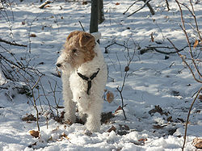
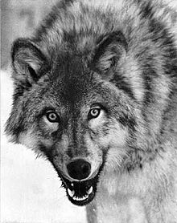
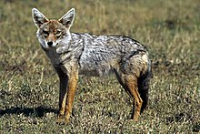

Pes domáci (Canis lupus f. familiaris) je domestikovaný poddruh vlka dravého.Na základe početných archeologických nálezov z rôznych kútov sveta je pes považovaný nielen za prvé domestikované zviera, ale aj za prvé zviera, ktoré človek cielene choval. K udomácneniu vlka došlo viackrát v rôznych častiach sveta a v rôznom čase nezávisle od seba (avšak najneskôr pred 10 000 rokmi). Tradične sa predpokladá, že k udomácneniu psov došlo na Blízkom alebo Strednom východe, nedávna štúdia naznačila, že psy môžu mať európsky pôvod. Z kostrových nálezov niekoľkých druhov psov sa odvodzovali a dodnes odvodzujú dnešné plemená. Za najstaršie praplemeno bol označený takzvaný pes močiarny či rašelinný (lat. Canis familiaris palustris Rütimeyer), od ktorého sa dodnes odvodzujú početné plemená špicov, pinčov a teriérov. Skupina severských, vlkom podobných psov a pastierske psy sú odvodzované od psa, ktorého kostra bola objavená vo vykopávkach pri Ladožskom jazere, a ktorý dostal meno Canis familiaris Inostranzewi. Skupina dogovitých psov sa odvodzuje ešte aj dnes od predka nazvaného Canis familiaris decumanus. Z doby 4000 až 5000 rokov pred Kr. pochádza pes bronzový (lat. Canis familiaris matris optimae), z ktorého majú pochádzať ovčiarske psy. Najmladším psom má byť Canis familiaris intermedius, z ktorého sa zvyknú odvodzovať dnešné duriče a pudle. Podľa teórie Gregoryho Aclanda, veterinára z Cornellskej univerzity v Itake v USA nie človek domestikoval psa, ale naopak, pes sám urobil prvý krok a začal spolužitie s človekom, pretože sa kŕmil jeho odpadkami.
  